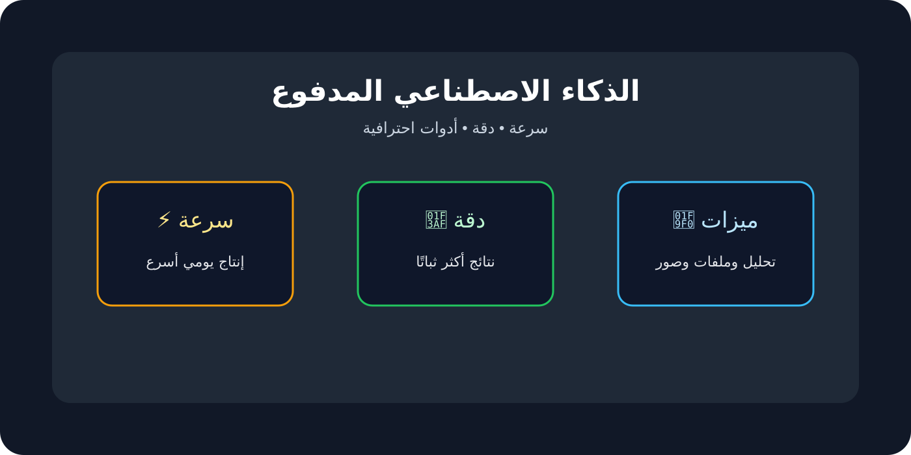

📑 محتوى المقال
لماذا هذه المقارنة مهمة؟
في وقت قصير جدًا، تحوّل الذكاء الاصطناعي من تقنية متخصصة إلى أداة يومية تدخل في الكتابة، البحث، خدمة العملاء، البرمجة، التصميم، وإدارة المشاريع. لكن مع هذا التوسع ظهرت أمام المستخدم ثلاثة مسارات مختلفة: أدوات مدفوعة توفر تجربة أكثر احترافية، أدوات مجانية تمنح بداية سهلة وسريعة، ونماذج مفتوحة المصدر تقدم حرية كاملة للمطورين والباحثين. وهنا يبدأ الالتباس: هل الأفضل أن تدفع؟ أم تكتفي بالمجاني؟ أم تتجه إلى المصادر المفتوحة؟
الإجابة ليست واحدة للجميع. فالشخص الذي يريد كتابة محتوى بسرعة لا يحتاج بالضرورة إلى نفس الحل الذي تحتاجه شركة تطور منتجًا خاصًا بها. كما أن المطور الذي يهتم بالتحكم الكامل والخصوصية قد يفضل خيارًا مختلفًا تمامًا عن مستخدم عادي يريد فقط مساعدًا ذكيًا يوميًا. لهذا السبب، فإن فهم الفروق العملية بين هذه الخيارات ليس رفاهية، بل خطوة أساسية قبل الاستثمار في الوقت أو المال أو البنية التقنية.
مناسب للأعمال والاعتماد اليومي الكثيف.
مناسب للتجربة والتعلّم والاستخدام الخفيف.
مناسب للمطورين وبناء حلول خاصة.
أولًا: الذكاء الاصطناعي المدفوع
عندما نتحدث عن الذكاء الاصطناعي المدفوع، فنحن نتحدث عن الخدمات التي تقدمها شركات كبرى مقابل اشتراك شهري أو سنوي. هذا النوع عادةً هو الأكثر نضجًا من ناحية تجربة المستخدم، لأنه لا يقدّم مجرد نموذج ذكي، بل يقدّم منظومة كاملة: واجهة استخدام مصقولة، تحديثات مستمرة، سرعة استجابة مستقرة، ميزات إضافية، ودعمًا أفضل في حالات الضغط.
الميزة الأكبر في الذكاء الاصطناعي المدفوع هي أن المستخدم لا يستهلك وقته في التجهيز أو الضبط. أنت تدخل مباشرة إلى الأداة، تكتب ما تريد، وتحصل غالبًا على جودة أعلى ومزايا أكثر تقدمًا، مثل تحليل الملفات، إنشاء الصور، التعامل مع كميات أكبر من السياق، أو الاستفادة من أوضاع أكثر تطورًا في البحث والبرمجة. لهذا نرى أن الفرق بين النسخة المجانية والمدفوعة لا يكون دائمًا في “إمكانية الوصول إلى الذكاء الاصطناعي” فقط، بل في عمق الاستفادة منه.
لكن هذه القوة تأتي مع تكلفة واضحة. فالاستخدام المدفوع قد يكون مناسبًا لشخص يعتمد على الذكاء الاصطناعي يوميًا في العمل أو المحتوى أو التطوير، بينما قد يبدو زائدًا عن الحاجة لمن يستخدمه مرات محدودة أسبوعيًا. كما أن المستخدم هنا يبقى مرتبطًا بسياسات الشركة: ما يتاح اليوم قد يتغير لاحقًا، وبعض الميزات قد تُقيد أو تُعاد تسعيرها أو تُعطى لأصحاب الباقات الأعلى.

متى يكون المدفوع هو القرار الذكي؟
- إذا كنت تستخدم الذكاء الاصطناعي يوميًا في الكتابة أو البحث أو البرمجة.
- إذا كانت السرعة والثبات والدقة تؤثر مباشرة في دخلك أو إنتاجيتك.
- إذا كنت تريد ميزات أكثر من مجرد دردشة أساسية، مثل الملفات، التحليل، أو أدوات العمل المتقدمة.
ثانيًا: الذكاء الاصطناعي المجاني
النسخ المجانية كانت ولا تزال بوابة دخول الملايين إلى هذا العالم. فهي تُزيل الحاجز المالي، وتتيح للمستخدم أن يختبر الفكرة بنفسه: كيف يطرح سؤالًا، كيف يطلب كتابة نص، كيف يُلخّص أو يُترجم أو يولّد أفكارًا. ومن الناحية التعليمية، هذه النقطة بالذات بالغة الأهمية، لأن كثيرًا من الناس لا يحتاجون في البداية إلى “أفضل نموذج في السوق”، بل يحتاجون إلى فرصة للفهم والتجربة.
الميزة الكبرى هنا هي سهولة البدء. لا إعدادات معقدة، ولا بنية تحتية، ولا حاجة لبطاقة رسومية أو خادم خاص. كما أن المجاني مناسب جدًا للأعمال الخفيفة: العصف الذهني، إعادة الصياغة، تلخيص النصوص، تنظيم الأفكار، أو البحث الأولي. ومع الوقت، يمكن للمستخدم أن يكتشف هل استخدامه فعلاً يستحق الانتقال إلى خطة مدفوعة أم لا.
لكن النسخ المجانية تأتي غالبًا مع حدود واضحة. قد تكون السرعة أقل في أوقات الضغط، أو تكون الميزات المتقدمة غير متاحة، أو يكون عدد الاستخدامات محدودًا، أو يُتاح نموذج أقل قدرة من النسخة المدفوعة. لذلك، المجاني ممتاز كبداية، لكنه ليس دائمًا كافيًا كحل احترافي طويل الأمد.
ثالثًا: الذكاء الاصطناعي مفتوح المصدر
أما الذكاء الاصطناعي مفتوح المصدر، فهو يمثل فلسفة مختلفة بالكامل. بدلاً من الاعتماد الكامل على شركة تمنحك الوصول إلى نموذجها وفق شروطها، يتيح لك هذا المسار تشغيل النماذج بنفسك، تعديلها، تخصيصها، أو دمجها في مشاريعك الخاصة. بالنسبة للمطورين والباحثين، هذا ليس مجرد خيار تقني، بل هو شكل من أشكال الاستقلال.
الميزة الجوهرية هنا هي التحكم. يمكنك أن تختار النموذج، بيئة التشغيل، طريقة الحماية، حدود الاستخدام، وأسلوب الدمج مع أنظمتك الداخلية. كما أن هذا المسار قد يكون مثاليًا في الحالات التي تحتاج إلى خصوصية أعلى أو تريد تجنب إرسال البيانات الحساسة إلى خدمات خارجية. وبالنسبة للشركات التقنية، قد يكون الاعتماد على نموذج مفتوح المصدر خطوة استراتيجية لتقليل التكاليف بعيدة المدى وبناء منتج فريد لا يشبه الآخرين.
مع ذلك، يجب قول الحقيقة بوضوح: مفتوح المصدر ليس خيارًا سهلاً للمبتدئ. فهو يحتاج إلى فهم تقني أفضل، وقد يحتاج إلى عتاد قوي أو خوادم مناسبة، وإلى وقت للضبط والتقييم والتحسين. كما أن جودة النتيجة لا تعتمد فقط على اسم النموذج، بل على طريقة تشغيله وضبطه والسياق الذي يُستخدم فيه. لذلك، الحرية هنا كبيرة، لكن المسؤولية أيضًا كبيرة.
أقوى ما يميز مفتوح المصدر
- إمكانية التعديل والتخصيص بحسب المشروع.
- تشغيل محلي يمنح خصوصية أكبر وتحكمًا أوسع.
- مرونة في الدمج مع التطبيقات والأنظمة الداخلية.
مقارنة مباشرة بين الأنواع الثلاثة
عند وضع الخيارات الثلاثة جنبًا إلى جنب، يصبح القرار أوضح. فالفرق الحقيقي لا يتعلق فقط بالسعر، بل بعناصر أخرى مثل الوقت، الخبرة، الثبات، والهدف النهائي من الاستخدام.
| المعيار | المدفوع | المجاني | مفتوح المصدر |
|---|---|---|---|
| الأداء | مرتفع ومستقر غالبًا | جيد لكن بحدود | متغير حسب النموذج والإعداد |
| التكلفة المباشرة | اشتراك شهري أو سنوي | بدون اشتراك | مجاني كنموذج لكن قد يحتاج بنية تحتية |
| سهولة الاستخدام | مرتفعة جدًا | مرتفعة | من متوسطة إلى معقدة |
| التحكم والتخصيص | محدود | محدود جدًا | عالٍ جدًا |
| الخصوصية | تعتمد على مزود الخدمة | تعتمد على مزود الخدمة | أفضل عند التشغيل المحلي |
| أفضل استخدام | العمل الاحترافي والإنتاج اليومي | التجربة والتعلم والمهام الخفيفة | المنتجات المخصصة والبحث والتطوير |
كيف تختار الأنسب لك؟
إذا كنت فردًا يريد إنجاز أعمال يومية بسرعة، فابدأ بالمجاني، ثم راقب احتياجك الحقيقي. إذا وجدت نفسك تعتمد على الأداة يوميًا وتحتاج سرعة أعلى وميزات إضافية، فالانتقال إلى المدفوع سيكون منطقيًا. أما إذا كنت مطورًا أو صاحب مشروع يريد دمج نموذج خاص داخل منتجه أو بيئته الداخلية، فالمصادر المفتوحة تستحق الدراسة الجدية.
أفضل طريقة للاختيار ليست السؤال: “ما الأداة الأقوى؟” بل السؤال: “ما أقل تكلفة تمنحني أكبر قيمة فعلية؟”. أحيانًا يكون المجاني كافيًا تمامًا. أحيانًا يكون المدفوع أفضل استثمار شهري في عملك. وأحيانًا لا يوجد بديل حقيقي عن مفتوح المصدر لأنك تحتاج مرونة وسيطرة لا تقدمها الخدمات الجاهزة.

إلى أين يتجه السوق مستقبلًا؟
السوق يتجه إلى تقارب تدريجي بين هذه الفئات. الأدوات المجانية تتحسن بسرعة، والخدمات المدفوعة تصبح أكثر تكاملاً، والنماذج مفتوحة المصدر تقفز في الجودة بوتيرة مذهلة. لكن رغم هذا التقارب، سيبقى هناك فرق أساسي بين “الراحة” و“التحكم”. الشركات المدفوعة ستستمر في الفوز من ناحية سهولة الاستخدام والدعم والسرعة، بينما سيستمر مفتوح المصدر في جذب من يريد حرية أعمق وتخصيصًا أكبر.
لهذا السبب، قد يكون المستقبل الأفضل لك ليس الاعتماد على فئة واحدة، بل بناء استراتيجية هجينة: تستخدم المجاني في الاستكشاف، والمدفوع في الإنتاج، ومفتوح المصدر في المشاريع التي تتطلب خصوصية أو مرونة أو استقلالية أعلى. بهذه الطريقة، لا تنظر إلى الأنواع الثلاثة كمنافسين فقط، بل كأدوات يمكن أن تكمل بعضها بعضًا.
الخلاصة
الذكاء الاصطناعي المدفوع، المجاني، ومفتوح المصدر ليست مستويات من نفس المنتج فقط، بل مسارات مختلفة تخدم احتياجات مختلفة. المدفوع يربح في الأداء والراحة، المجاني يربح في سهولة البداية، ومفتوح المصدر يربح في الحرية والسيطرة. لذلك فإن الاختيار الصحيح لا يبدأ من شهرة الأداة، بل من وضوح هدفك أنت: ماذا تريد؟ كم مرة ستستخدمها؟ وما مقدار الوقت أو المال أو الجهد الذي تستطيع استثماره؟
عندما تجيب عن هذه الأسئلة بصدق، ستعرف بسرعة أي طريق يناسبك أكثر — وربما تكتشف أن أفضل حل ليس واحدًا فقط، بل مزيج ذكي بين الثلاثة.